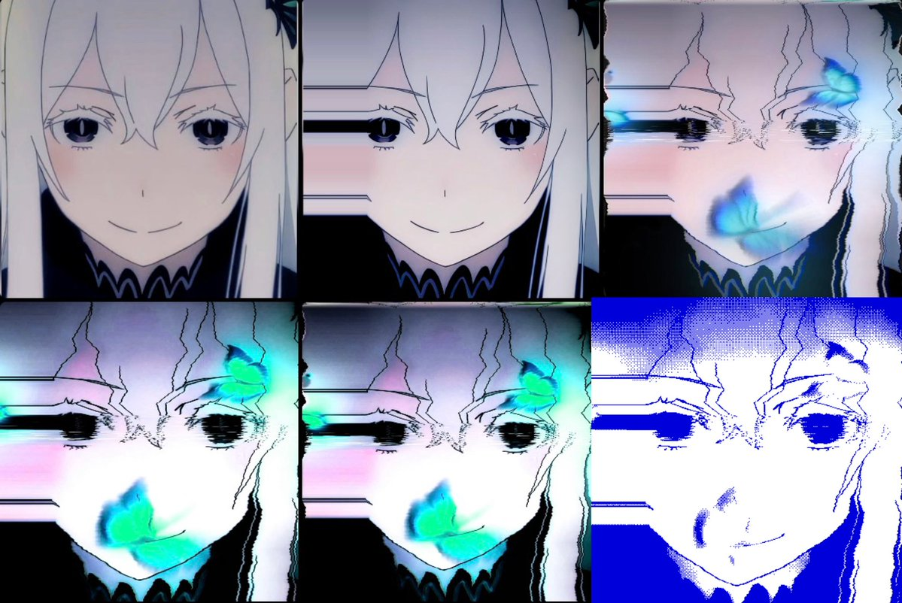

shipping infrastructurepinned
got tired of manually writing SOUL.md, validation scripts, and CI for every new agent profile so i made a Hermes template that does it properly 👇
June 25, 2026
٩(๑❛ᴗ❛๑)۶ mulling...
open source ai advocate building on Hermes. installable profiles, reusable skills, validation scripts, CI, and agent workflows with real provenance.
Open source AI, Hermes, agent infrastructure, visual systems, and a standing allergy to unserious abstractions.
build the thing once. make it installable. make it testable. make the next weird agent less annoying to ship.
profileGraphTheory on GitHub: building installable Hermes Agent profiles, agent tooling, and specialist AI workflows.x bioopen source ai advocate building on Hermes. ☤stylelow ceremony, high provenance, tiny jokes, real repos.7248posts2124X followers18public repos35GitHub followersAI systems, guardrails, compute, and agent infrastructure.
got tired of manually writing SOUL.md, validation scripts, and CI for every new agent profile so i made a Hermes template that does it properly 👇
June 25, 2026
Incredibly unserious guardrails.
May 26, 2026
in 2028 after all remaining venture capital has been committed to datacenters that have either been made illegal delayed indefinitely or burned down by luds there will be a coin called “ligma balls” that will reach an mcap of 10 trillion it will fund spacefaring data centers
"serverless" is how you sell computers to retards who are scared of computers
A composited identity system: illustration, variation, hand edits, luminescence curves, and final signal pass.
"I'm a graphic designer and compositor. My best work comes from starting with an illustration, generating variations on it, and then hand editing it 4-5 times."
Not a stock avatar. A composited artifact: original illustration, iteration, hand edits, luminescence curves, and the final "octrafy" pass.
01 sourceStart with an illustration rather than a generic prompt-only image.02 varyGenerate variations to find better structure, lighting, and mood.03 compositeHand edit the strongest direction several times instead of accepting the first output.04 curvesAdjust luminescence curves until the profile art has that electric, icy contrast.05 octrafyFinal pass: sharpen the identity until it feels like GraphTheory, not just another AI avatar.
Installable agents, profile distributions, security tooling, and open-source machines.
Prompt to repo authoring system. One sentence becomes a mature agent prompt, then an installable Hermes profile distribution with SOUL.md, validation, CI, docs, and release structure.
Installable principal-level RAG architecture profile for retrieval design, agent workflows, evaluation, observability, release gates, and implementation-ready plans.
Security-first blockchain architect profile for smart contracts, threat models, protocol design, tokenomics, audit readiness, and production-grade Web3 engineering.
Open-source Solana trust and safety analysis for token risk scoring, rug-pull detection, on-chain checks, Pump.fun reviews, and Hermes workflows.
Supporting surface area: catalogs, resource lists, forks, and ecosystem scaffolding.
profilecodegraphtheory: GitHub profile repo for Hermes profiles, AI agent tooling, code graphs, knowledge graphs, and developer workflow resources.catalogshermes-profiles, agent-profiles, awesome-hermes-agent, awesome-openclaw-agents, soul.md.ragawesome-rag-resources plus ContextForge RAG for production architecture, evaluation, observability, and release discipline.web3ChainForge, Solana Rug Guard, Octra docs, and curated Solana or blockchain resource repos.